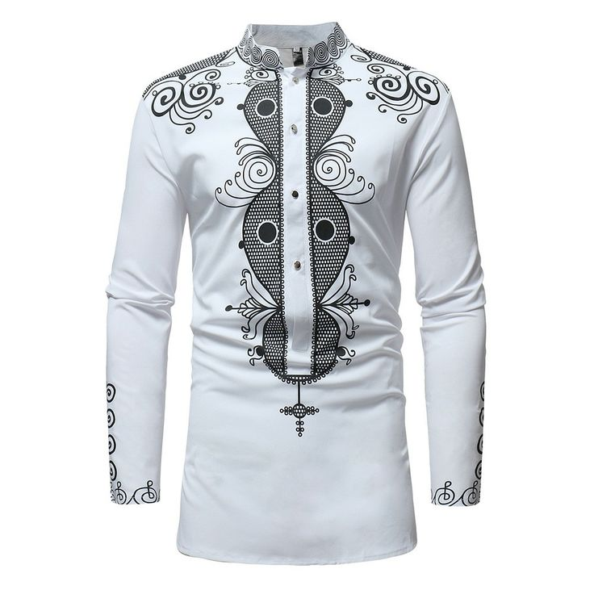

Sunu Couture est a dakar (point E) sur l'avenu cheikh anta diop en face tapis rouge.IL est un atelier dedie a la creation et la modification de vetements et accessoires il est equipe de machines a coudre , de table de coupe, de materiel de repassage.
